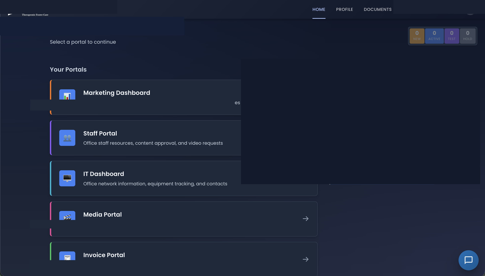
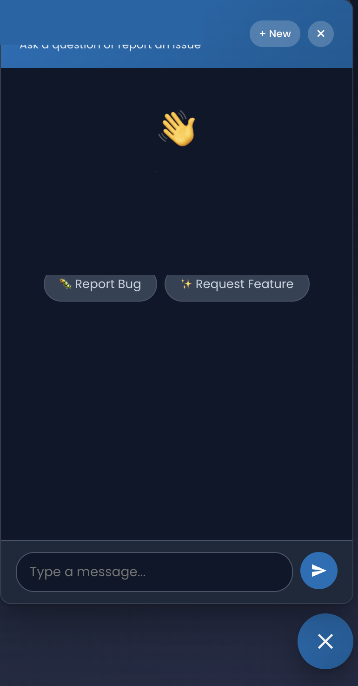
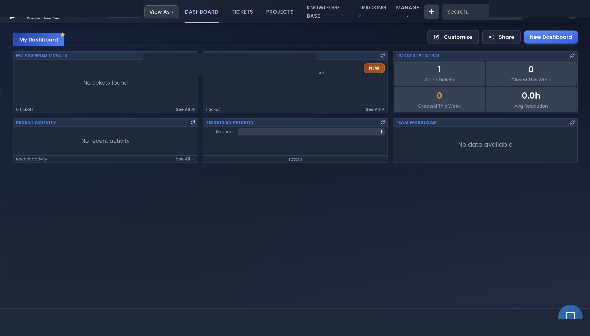

Custom autonomous agents, workflow automation, and intelligent infrastructure for businesses ready to stop doing things manually.
Custom autonomous agents with reasoning loops, tool-calling, and self-healing capabilities. Not chatbots—production systems that diagnose, decide, and act.
End-to-end business process automation powered by LLMs. Invoice processing, lead qualification, content pipelines—any repetitive work your team does manually.
Intelligent assistants that understand your business. RAG-powered chatbots, cross-platform bots with SSO, context-aware support systems.
Docker deployments, monitoring stacks, CI/CD pipelines, and self-hosted solutions. The foundation that makes everything else reliable.
A production AI platform that autonomously monitors, diagnoses, and remediates infrastructure issues across a distributed system. Built from scratch with a custom agentic reasoning engine, tool-calling architecture, and multi-service coordination.
Production tools built for real users and real workflows.

Multi-portal web application with SSO authentication, role-based access control, and integrated workflows serving hundreds of daily users.

Cross-platform chatbot integrated across multiple portals via SSO, using RAG to answer user questions contextually from documentation.

Custom business automation tools for process management, task routing, operational reporting, and team coordination.
4-system architecture spanning local servers, cloud VPS, and NAS storage with automated backups, VPN access, and disaster recovery.
Complete monitoring pipeline with metrics collection, log aggregation, intelligent alerting, and custom dashboards across all systems.
600+ entity Home Assistant deployment with Zigbee mesh network, AI-powered camera system, climate control, and custom dashboards.
Have a process that needs automating? A system that needs intelligence? Let's discuss how AI can save your team time and money.